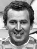
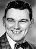
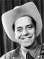
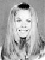
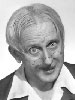
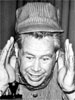
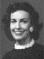
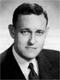
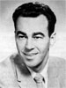
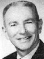

|
A |

|
|
|
Ken Ackerman
Host, Good
Day Oregon (August 1996 - August 2002) |
|
 |
Bob Adkins ("Addie Bobkins")
Host, Popeye's Pier 12 (August
1961
- August 1964)
Host, Casper and Friends with Addie Bobkins |
 |
Jim Allen ("Rusty Nails")
Host, Rusty's
Hour (September 1958 - December 1959)
Host, Rusty Nails and
the Three Stooges (January 1960 - March 1962)
Host, The Rusty Nails Cartoon Show (January
1967 - September 1972)
Host, Kids' Comedy Theater
(September 1972 - March 1973)
|
|
|
Rod Anders ("Ramblin' Rod")
Host, Popeye's Pier 12 (August 1964 - September 1970)
Host, Touche Turtle and Friends (August 1964 - September 1966)
Host, Ramblin' Rod's Cartoons (September 1966 - September 1968)
Host, The Ramblin' Rod Cartoon Show (September 1970 - March 1997)
Host, 12 in the Morning (+/- August 1976 - September 1995) |
 |
Barbara Angell
Host, What's Cooking at Home? (April 1953 - May 1956)
Host, Northwest Home (June 1956 - May 1957)
Host, TV Show of Homes (January 1961 - November 1969) |
|
|
David Apple
Weathercaster, The 10 O'Clock News (September
1983 - September 1985)
Weathercaster, The 10 O'Clock News (July
1992 - 1998) |
|
|
Ed Arndt
Anchor, News Central (1960s) |
|
B |
|
|
|
Sally
Baker ("Hobo Kelly")
Hobo Kelly (1969 - February 1973 ) |
 |
Tim Becker
Sports Anchor, The 10 O'Clock News (January
1997 - present) |
|
|
Duane Bock
Anchor,
News
Central
(1964-68) |
|
|
Frank Bonnema
Host, Frank Bonnema's Matinee 12
Host, Portland Wrestling (February
1967 - October 1982) |

|
Gene Brendler
(1953-1992)
Host, The World on View ( - )
Host, See Hear ( - )
Host, Dialing for Dollars
Northwest Byline ( - April 1992)
Host, Viewer's Digest (May 1983 - April 1992)
News june 1957
Host, Wedding Belles (1953 - 1955+ )
Host, High Time
(October 1957 - September 1960)
Host, For Teenagers Only
Host, TV Showcase of Homes
Host, 12 in the Morning (+/- July 1964 - February 1972 + )
Host, Wolfard's Supper Club (April 1957 - )
Host, Diner at Bart's (November 1955)
Host, TV Bingo (July 1963 - December 1963) |
|
|
Fred Buller/Bullier
Weathercaster, The 10 O'Clock
News (1985-19 ) |
|
C |
|
|
|
Andy Carson
Weathercaster, Oregon's News 12 at Six
(August 1996- August 1999)
Weathercaster, Good Day Oregon (August 1996- ) |
|
|
Phil Cassidy
Sports Anchor,
The 10 O'Clock News
- Weekend Edition (1990) |
|
|
Dan Christopherson
Sports Anchor,
The 10 O'Clock News
- Weekend Edition ( - July 2002) |
|
|
Bill Clayton
Sportscaster, News Central (April 1953- ) |
|
D |
|
|
|
Mike Darcy
Host, In the Garden with Mike Darcy (March
2000 - August 2002) |
|
|
Mike Davenport
Host, A Friend of the Family ( - March 1954 -
September 1954 + ) |
|
|
Jim Donovan
Weathercaster, The 10 O'Clock
News (19 -1992) |
|
E |
|
|
F |
|
|
|
Pete
Ferryman
News Anchor, Good Day Oregon (2000 - present) |
|
 |
Hector
Flateau ("Heck Harper")
Host, Heck Harper's Bar 27 Corral (November
1953 - November 1956)
Host, Heck Harper's Jamboree |
|
|
Chuck
Foster
Anchor, Chuck
Foster's News Scene (September 1953 - January 1954) |
|
 |
Victoria Fuller
Weathercaster, The
10 O'Clock News (1970s) |
|
G |
|
|
 |
Fred
Giermann
Host,
The Toymaker (- October 1953 -
April 1954 +) |
|
|
Ed
Gilbert
Host,
High
Time (August 1957 - October 1957) |
|
|
Monica Guza
Weathercaster, The 10 O'Clock News - Weekend Edition (19 -2002) |
|
H |
|
|
|
Tom Halverson
Host, Gardening for Fun (1966 - September 1984) |
|
|
Edwin Hart
Anchor, News
Central (1960s) |
|
|
Michael Hartfield
Anchor, The 10 O'Clock
News (September 1970 - summer 1976) |
|
|
Gary Hill
Anchor, The 10 O'Clock
News (February 1984 - July 1992) |
|
|
Rod Hill
Weathercaster,
The 10 O'Clock News
(April 1999 - 2003) |
|
I |
|
|
J |
|
|
|
Linda
Johns
Host, Viewer's Digest (19 - 1993) |
|
|
Jimmy Jones
Sportscaster, News, (January 1960 - fall 1982)
Host, For Teenagers Only
Announcer, Portland Trailblazers Basketball
Announcer, Portland Timbers Soccer |
|
K |
|
|
|
Kasey Kaufman
Anchor, The 10 O'Clock News (February 1983 - January 1984) |
|
|
Anna Katayama
Anchor,
The 10 O'Clock News
- Weekend Edition (December 1995-Present) |
|
|
Pat Kirk
Anchor,
The 10 O'Clock News
(March 1993 - November 1994)
Anchor,
The 10 O'Clock News
- Weekend Edition (November 1994 - ) |
|
L |
|
|
 |
Charlie LaFranchise
("Uncle Charlie")
news june 1957
Host, Uncle Charlie's Roundhouse
(+/- March 1960 -
+/-
September 1961)
Host, Uncle Charlie's Den ( )
Host, TV Showcase of Homes |
|
|
William Lambert |
|
|
Lars Larson
Anchor,
The 10 O'Clock News
- Weekend Edition
Anchor, Northwest Reports
(September 1992 - September 1997)
Anchor,
The 10 O'Clock News
(November 1994 - November
1998) |
|
|
John
Lewis
Host,
High Time (September 1957)
Weathercaster, News Central (1960s) |
|
 |
Geri Lindsey
Weathercaster
(June 1957)
Host, Two O'Clock Playhouse
(+/-
May 1957)
Host, The Deep Show (November 1958) |
|
|
Kurt Ludlow
Anchor, The 10 O'Clock News (April 1999 - October 2002) |
|
M |
|
|
|
Tony Martinez
Traffic
Reporter,
Oregon's News 12 at Six (August 1996 - August 1999)
Traffic Reporter,
Good Day Oregon (August 1996 - present) |
|
|
Lori
Matsakawa
The 10 O'Clock News
(1980) |
|
|
Kimberly Maus
Host,
Good Day Oregon (1998 - Present) |
|
 |
Tom Lawson McCall
Panelist,
Treasure
Hunt
(October
1953
-
January
1954)
Anchor,
Equitable Newsmaker of the Week
(December
1955
-
January 1956)
|
|
|
Trish
Moss-Soika
Weathercaster,
The 10 O'Clock News
(1970s) |
|
|
Chris Murphy
Anchor, The 10 O'Clock News
- Weekend Edition |
|
N |
|
|
|
Jim
Newman
Anchor, The 10 O'Clock News
- Weekend Edition (1970s) |
|
O |
|
|
|
Michael O'Brien
Sports Anchor,
The 10 O'Clock News
(1984 - 1996) |
|
P |
|
|
|
Shauna Parsons
Anchor, The 10 O'Clock News (October 2000-Present) |
|
|
Pete Prlain
Host, How
to... with Pete (December 1976 - December 1984) |
|
Q |
|
|
R |
|
|
|
Robyn
Reed ("Miss Robyn")
Teacher,
Romper
Room (April 1962 - September 1963) |
|
|
Modesto Rios |
|
|
George Ross ("Dr. Zoom")
Dr. Zoom's Cartoons (1962
-
1966) |
|
S |
|
|
|
George Sanders
Host, Eye Opener (
+/- March
1960)
Anchor, News Central (
+/-
September 1961 +/- ) |
|
|
Kim Singer
Anchor, The 10 O'Clock News
(February 1984 - February 2000) |
|
 |
Ivan Smith
Newspaper of the Air (1955 - December 1956) |
|
|
Kathy Smith
Anchor, Oregon's News 12 at Six (August 1996
- August 1999)
News Anchor, Good Day Oregon (August 1996 - 2001) |
|
 |
Don Stellges
Anchor, The Stellges Report
(+/-
1964
-
+/-
1979)
Anchor, Don Stellges News Desk
Anchor, Weekend Morning News (
+/- Feb
1972
)
|
|
|
George Stephan
Weathercaster, The 10 O'Clock News
- Weekend Edition (19 - 19 ) |
|
|
Laura Stephenson
Host,
Good Day Oregon (August 1996 - February
1998) |
|
|
Sylvia Stinson
Anchor, The 10 O'Clock News
(1976 -
1980) |
|
|
Bill
Stout
Host, Sports Clinic |
|
T |
|
|
|
Dave Thompson
Anchor, The 10 O'Clock News
- Weekend Edition
(+/-
November 1998 -
+/-1999) |
|
|
Ulysses Tucker Jr.
Host,
Dialogue (19 - 19 ) |
|
U |
|
|
V |
|
|
|
Dorothy
Venables ("Miss Dorothy")
Teacher,
Romper Room (September 1959 - April
1962) |
|
W |
|
|
|
Norman Wallace
Newscaster, News (April 1953- ) |
|
|
Ted Warren
Anchor, The 10 O'Clock News
(1976 - January 1984) |
|
X |
|
|
Y |
|
|
|
Emerald Yeh
Anchor, The 10 O'Clock News (May 1980-January 1983) |
|
Z |
|